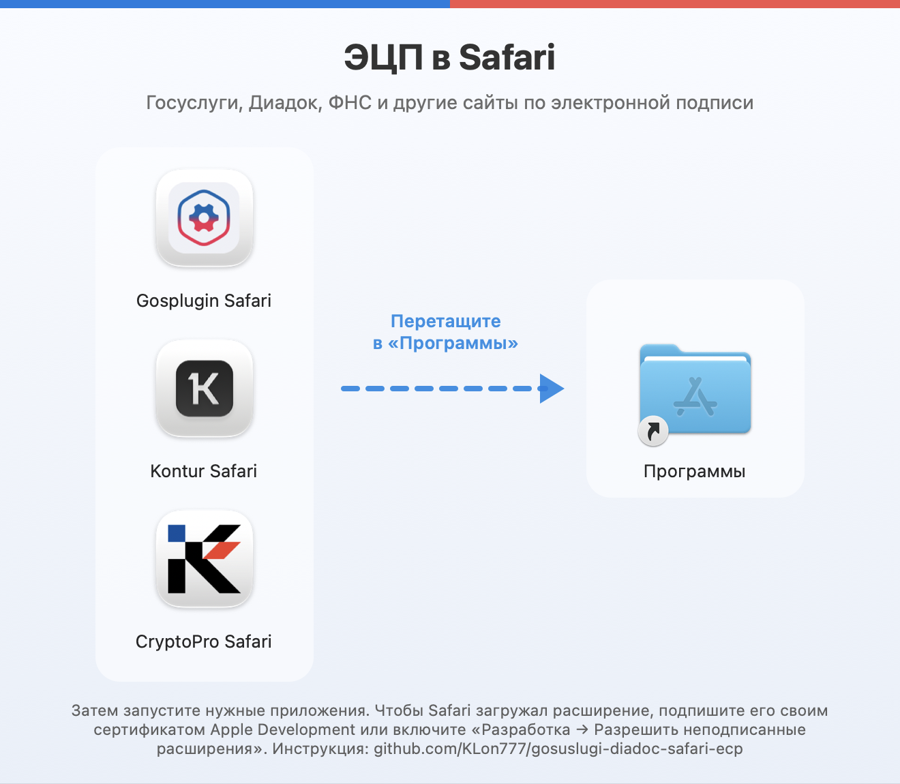
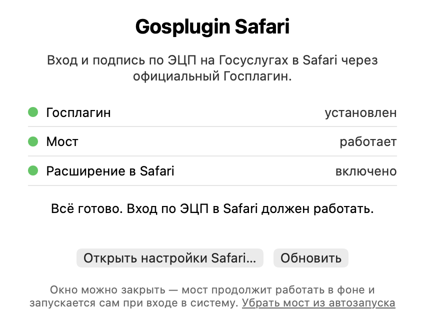
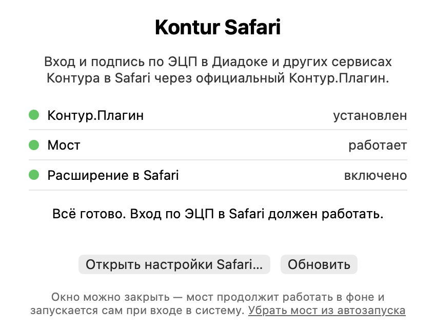
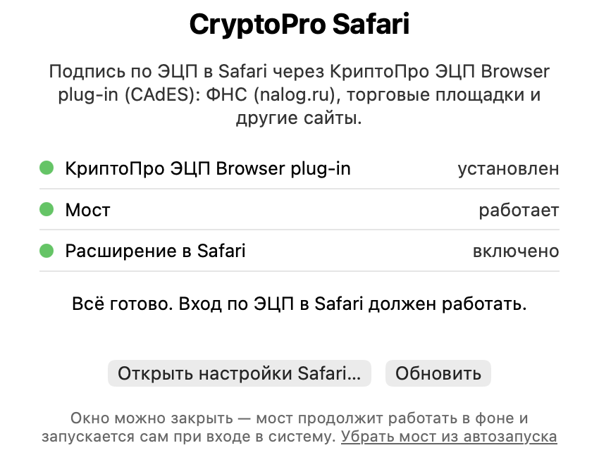

ЭЦП в Safari на Mac: Госуслуги, Диадок, ФНС
Вход и подпись документов по электронной подписи прямо в Safari на macOS — без Chrome и Яндекс.Браузера. Работает с официальными Госплагином, Контур.Плагином, КриптоПро ЭЦП Browser plug-in, КриптоПро CSP и Рутокеном.
Скачать ESign-Safari.dmg Инструкция по установкеGosplugin Safari — Госуслуги
Вход на Госуслуги (ЕСИА) по электронной подписи и подписание заявлений и документов в Safari через официальный Госплагин.
Kontur Safari — Диадок и Контур
Вход в Диадок по сертификату, подписание и проверка документов в Safari через официальный Контур.Плагин — также Контур.Крипто и другие сервисы Контура.
CryptoPro Safari — ФНС и другие сайты
Вход и подпись в личном кабинете ФНС (nalog.ru), на торговых площадках и других сайтах через КриптоПро ЭЦП Browser plug-in (CAdES).

Почему Госуслуги, Диадок и nalog.ru не работают в Safari
Госплагин и Контур.Плагин официально поддерживают только Chrome, Firefox, Яндекс.Браузер и другие браузеры на Chromium — их расширений для Safari нет, поэтому вход по ЭЦП и подпись документов в Safari на Mac не работают. Расширение КриптоПро ЭЦП Browser plug-in для Safari в новых версиях Safari не появляется в настройках, поэтому nalog.ru не видит ЭЦП. Эти приложения добавляют в Safari расширения для всех трёх плагинов и связывают их с установленными на Mac Госплагином, Контур.Плагином и КриптоПро ЭЦП Browser plug-in.
Как установить
- Установите КриптоПро CSP с лицензией и нужный плагин: Госплагин, Контур.Плагин или КриптоПро ЭЦП Browser plug-in.
- Скачайте
ESign-Safari.dmgи перетащите приложение в «Программы». - Подпишите приложение своим бесплатным сертификатом Apple Development — или включите в Safari «Разработка → Разрешить неподписанные расширения». Подробно — в инструкции.
- Запустите приложение, нажмите «Открыть настройки Safari…» и включите расширение.



Частые вопросы
Можно ли подписывать документы на Госуслугах в Safari?
Да — не только входить через ЕСИА, но и подписывать заявления и документы электронной подписью.
Диадок не видит сертификат в Safari — что делать?
Установите Контур.Плагин и Kontur Safari: Диадок увидит сертификат, через него можно войти, подписывать и проверять документы.
Личный кабинет ФНС (nalog.ru) не видит ЭЦП в Safari — что делать?
Установите КриптоПро ЭЦП Browser plug-in и CryptoPro Safari: nalog.ru увидит сертификат, можно входить и подписывать документы.
Нужен ли Chrome?
Нет. Нужны КриптоПро CSP, нужный плагин (Госплагин, Контур.Плагин или КриптоПро ЭЦП Browser plug-in) и приложение отсюда.
Какие носители поддерживаются?
Любые, которые видит КриптоПро CSP: Рутокен, JaCarta, ESMART и другие.
Подходит для Mac на M1–M4?
Да, приложения универсальные: Apple Silicon и Intel, macOS 12 и новее, Safari 16 и новее.